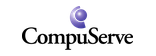

|
|

|
|
The World Wide Web was, for a brief and luminous period, structured. Every region of the page occupied a cell. Every cell knew its neighbours. A document could be drawn, in full, on a sheet of graph paper before a single character was typed. This was not a limitation. This was civilisation.
Then came the great divorce — the severing of content from presentation, the exile of the layout to a distant file ending in .css. We were promised flexibility. We received chaos: layouts that reflow without permission, columns that collapse without warning, and designs that look different depending on the whims of the device.
The Web Development Association for the Re-instatement of Tables for Layout exists to correct this historic error. We hold a single, unwavering conviction: that the <table> element is not merely a tool for tabular data, but the rightful and natural skeleton of every web page ever made or yet to be made.
❖ STRUCTURA SUPER OMNIA ❖
(structure above all)
|
|
It is the formal and considered position of the Association that a website shall be 760 pixels wide — on every device, in every browser, in perpetuity. We call this consistency, and we regard it as a courtesy to the reader.
The industry now insists that a page must “adapt” to its viewport — rearranging itself like nervous furniture each time a window is resized. We ask a simple question: where is the furniture supposed to be? A page that can be anywhere is, in a meaningful sense, nowhere.
|
|
“A media query is a confession. It admits, in writing, that the author does not know how wide their own website is.”
— from the Association's founding charter, Article IV |
Mobile telephones, we are told, have changed everything. They have not. The mobile telephone has a screen; our website appears on the screen; the user may pinch, pan, and zoom with their fingers, as nature intended. The matter is closed.
|
|
The Association's Standards Committee evaluated the leading layout methodologies against the criteria that matter. The findings were unanimous and are reproduced below in — what else — a table.
| Criterion |
Tables ✔ |
Flexbox |
CSS Grid |
| Pixel Fidelity |
Absolute |
Negotiable |
Negotiable |
| Works in Netscape 4 |
Flawlessly |
No |
No |
| Honesty |
The cell is the cell |
Pretends |
Pretends harder |
| Drawable on graph paper |
Yes |
Requires faith |
Requires a diagram |
| Spiritual Weight |
Considerable |
Weightless |
Weightless |
| Nostalgia per kilobyte |
Maximum |
None |
None |
| FINAL VERDICT |
ADOPTED |
declined |
declined |
Methodology available upon request. Request must be submitted in a table.
|
|
WDART is proudly underwritten by an alliance of industry pioneers who share our enduring commitment to the timeless and the rectangular.
FOUNDING PLATINUM SPONSOR
“Without <blink>,
we are nothing.”
|
|
NEIGHBORHOOD PARTNER
“We still host twelve nested
tables and a starfield.”
|
|
GOLD SPONSOR
“Fireworks slices your JPEG
into 47 cells. Still.”
|
|
OFFICIAL TOOLING PARTNER
“We generate the spacer
GIFs so you don't.”
|
|
OFFICIAL SEARCH PARTNER
“We index your <table>
with pride.”
|
|
AFFILIATE SPONSOR
“Layout's flashier cousin —
and a loyal backer.”
|
|
|

CONNECTIVITY SPONSOR
“Keyword: TABLES.”
|
|
PORTAL PARTNER
“A portal.
To more tables.”
|
|
† The Association extends its sincere gratitude to its corporate sponsors for their steadfast and ongoing support of structured layout. Their continued backing is, frankly, more than we expected. Sponsorship inquiries may be directed to the Secretary.
|
|
| Q. |
But isn't this terrible for accessibility?
A screen reader announces our cells in the order we wrote them. We therefore write them in the correct order. We are confident this resolves the concern. (We have not tested it. The Association does not own a screen reader.)
|
| Q. |
What about mobile phones?
The telephone has a screen. The website appears on the screen. The user applies their fingers. We consider the matter elegantly closed.
|
| Q. |
Isn't a table-based layout impossible to maintain?
To alter the layout, one simply edits each of the 1,400 cells in turn. Members report that the repetition is clarifying, even meditative. Burnout is, in our experience, a CSS problem.
|
| Q. |
Why not just use CSS?
Cascading Style Sheets exist to separate content from presentation. We see no reason to separate two things that so plainly love each other.
|
| Q. |
Is this whole thing a joke?
The Association has no sense of humour. This is, and has always been, a load-bearing position. |
|
|
|
A project by Ryan Null · read more at codebehavingbadly.com
© 2026 The Web Development Association for the Re-instatement of Tables for Layout. No CSS was used in the making of this website. This is verifiable. Please verify it.
|
|